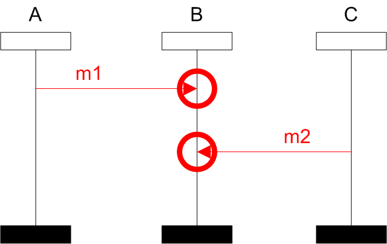

Race Condition
Informally, two events are in race if they are specified by user to perform in some order, but there is a possibility that they can perform in an inverse order. Race condition occurs in a BMSC whenever a pair of events is drawn in a particular order but there exists a execution with a different order. If the real implementation is based on the BMSC specification, it may lead to a system failure. Do not mix up race condition with FIFO; race condition is only applicable for BMSCs that satisfy FIFO.
SCStudio finds all pairs of events in a given BMSC and also in BMSCs referenced by an HMSC. On the next picture there is an example of an BMSC which contains race condition:
-
- Input BMSC
-
- Possible execution
-
- 
- SCStudio result
The race condition may also occur between events from different BMSC within an HMSC. HMSC contains race if there exists path which contains a race. SCStudio is capable of finding one such occurrence:
-
-

- Input HMSC with a race
-
-
- MSC A
-
- MSC B